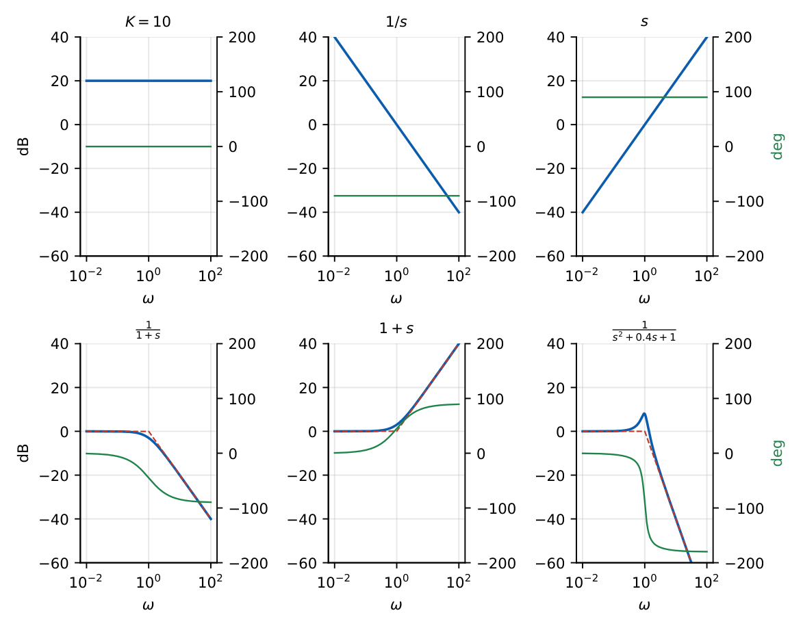
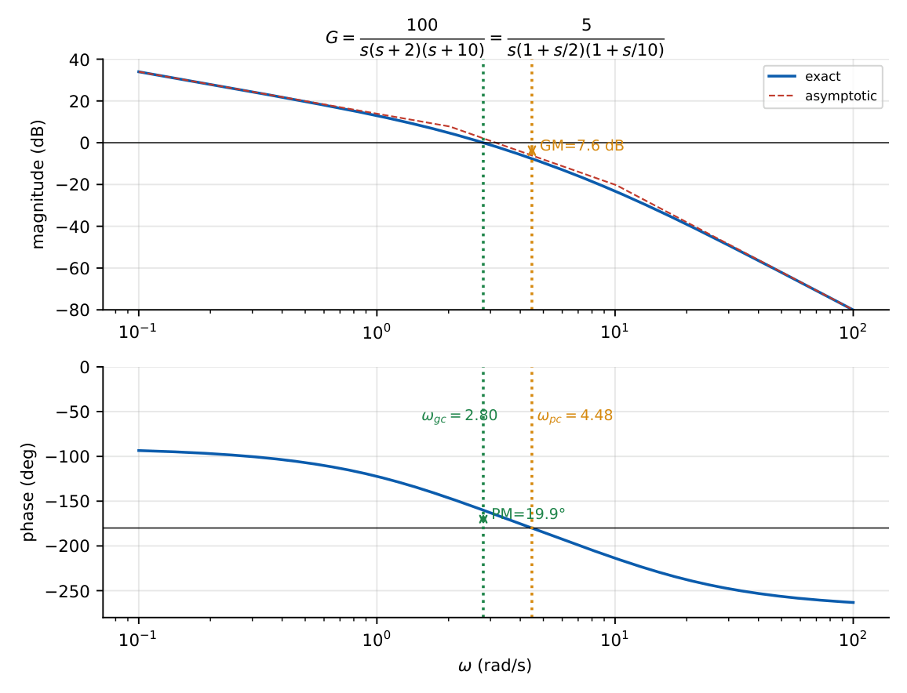

Bode Plot
In this chapter
Sketch/read asymptotic Bode plots, find the transfer function from a plot, compute \(\omega_{gc}\), \(\omega_{pc}\), GM and PM. Very common 2-mark topic; the trick is fluent use of slopes (20 dB/decade per pole) and corner frequencies.
14.1 Core concept
A Bode plot has two graphs against \(\log\omega\): magnitude in dB (\(20\log_{10}|G(j\omega)|\)) and phase in degrees. Because \(\log\) turns products into sums, the plot of \(G=K\prod(\cdots)\) is the sum of the plots of each factor.
14.2 Standard factors
Write \(G(s)H(s)=\dfrac{K\,(1+s/z_1)\cdots}{s^N(1+s/p_1)\cdots(s^2/\omega_n^2+2\zeta s/\omega_n+1)}\) (Bode form: every factor is \(1\) at \(s=0\)).

1.3
| Factor | Magnitude (asymptotic) | Phase |
|---|---|---|
| \(K\) | flat, \(20\log K\) dB | \(0^\circ\) (\(180^\circ\) if \(K<0\)) |
| \(\dfrac1{s^N}\) | slope \(-20N\) dB/dec through \(0\) dB at \(\omega=1\) | \(-90^\circ N\) |
| \(s^N\) | slope \(+20N\) dB/dec | \(+90^\circ N\) |
| \(\dfrac1{1+s/\omega_c}\) | \(0\) dB to \(\omega_c\), then \(-20\) dB/dec; \(-3\) dB at \(\omega_c\) | \(0^\circ\to-90^\circ\); \(-45^\circ\) at \(\omega_c\) |
| \(1+\dfrac s{\omega_c}\) | \(0\) dB to \(\omega_c\), then \(+20\) dB/dec | \(0^\circ\to+90^\circ\) |
| \(\dfrac1{s^2/\omega_n^2+2\zeta s/\omega_n+1}\) | flat, then \(-40\) dB/dec beyond \(\omega_n\); peak \(-20\log(2\zeta\sqrt{1-\zeta^2})\) dB | \(0^\circ\to-180^\circ\); \(-90^\circ\) at \(\omega_n\) |
| \(e^{-sT}\) | \(0\) dB | \(-\omega T\) rad (falls without limit) |
- Phase of a simple factor is within \(6^\circ\) of its asymptote outside one decade around \(\omega_c\) (\(-5.7^\circ\) at \(0.1\omega_c\), \(-84.3^\circ\) at \(10\omega_c\)).
- The error of the asymptote at the corner is \(3\) dB (simple factor) and depends on \(\zeta\) for the quadratic factor (\(\zeta<0.5\) gives a peak).
- Minimum phase: no RHP poles/zeros. Then phase is fixed by the magnitude slope (\(-20\) dB/dec \(\leftrightarrow-90^\circ\)). A RHP zero, e.g. \((1-s/z)\), has the same magnitude as \((1+s/z)\) but a phase lag.
14.3 Procedure to draw the magnitude plot
- Put \(G\) in Bode form; list the corner frequencies \(\omega_c=1/T\).
- Low-frequency asymptote: slope \(-20N\) dB/dec passing through \(20\log K\) dB at \(\omega=1\) (for type \(N\); also crosses \(0\) dB at \(\omega=K^{1/N}\)).
- Moving right, change the slope at each corner: \(-20\) per pole, \(+20\) per zero, \(-40\) per quadratic pole pair, \(+40\) per quadratic zero pair.
- Phase: add the contribution of each factor; pick \(\omega_{gc}\) and \(\omega_{pc}\) from the graph.
14.4 Solved examples
\(G=\dfrac{100}{s(s+2)(s+10)}=\dfrac{5}{s(1+s/2)(1+s/10)}\). Corners: \(2,10\). Magnitude at \(\omega=1\) is \(20\log5=14\) dB; slope \(-20\) up to \(2\) (falls \(6\) dB to \(8\) dB), then \(-40\) up to \(10\), then \(-60\). Asymptotic \(\omega_{gc}\): from \(8\) dB at \(\omega=2\) with slope \(-40\): \(\omega=2\times10^{8/40}=3.17\) (exact \(2.80\)). Phase at \(\omega_{gc}\): \(-90^\circ-\tan^{-1}\dfrac{2.8}2-\tan^{-1}\dfrac{2.8}{10}=-90-54.5-15.6=-160.1^\circ\), so \(\mathrm{PM}=19.9^\circ\). Phase \(=-180^\circ\) at \(\omega_{pc}=\sqrt{20}=4.47\) rad/s where \(|G|=0.417\): \(\mathrm{GM}=2.4=7.6\) dB (marginal at \(K=240\)).

A minimum-phase plot has initial slope \(-20\) dB/dec, \(+40\) dB at \(\omega=0.1\); slope changes to \(-40\) at \(\omega=2\) and back to \(-20\) at \(\omega=20\). Then \(G=\dfrac{K(1+s/20)}{s(1+s/2)}\) with \(\dfrac{K}{0.1}=100\Rightarrow K=10\): \(G=\dfrac{10(1+s/20)}{s(1+s/2)}=\dfrac{s+20}{s(s+2)}\) (check: at low \(\omega\), \(\dfrac{20}{2\omega}=\dfrac{10}{\omega}=100\) at \(\omega=0.1\)).
If the initial \(-20\) dB/dec line crosses \(0\) dB at \(\omega=8\), then \(K_v=8\). For a \(-40\) dB/dec initial slope crossing \(0\) dB at \(\omega=4\): \(K_a=4^2=16\).
\(G=\dfrac1{s^2+0.4s+1}\): \(\omega_n=1\), \(\zeta=0.2\), peak \(=-20\log(0.4\times0.98)=+8.1\) dB at \(\omega_r=\sqrt{1-0.08}=0.96\).
\(G=\dfrac{10}{s(1+0.1s)}\): \(\omega_{gc}=7.86\), \(\mathrm{PM}=90-\tan^{-1}(0.786)=51.8^\circ\); \(\omega_{pc}=\infty\) (phase never reaches \(-180^\circ\)) so GM is infinite.
14.5 Physical interpretation
The slope of the magnitude plot near \(\omega_{gc}\) decides the stability margin: a \(-20\) dB/dec crossing (phase near \(-90^\circ\)) is safe, a \(-40\) dB/dec crossing gives a phase close to \(-180^\circ\), poor PM; \(-60\) dB/dec usually means unstable. Lifting the gain moves \(\omega_{gc}\) right (faster) but into steeper slope (less PM): the classic speed–stability trade-off.
(i) Number of poles \(-\) zeros \(=\) final slope\(/(-20)\). (ii) Phase at high frequency \(=-90^\circ(n-m)\) for a minimum-phase function. (iii) For \(\zeta=0.5\) loops \(\omega_{gc}=0.79\omega_n\). (iv) Drop in dB over a slope \(s\) dB/dec across a frequency ratio \(r\): \(s\log_{10}r\). (v) GM\(_{dB}=-|G(j\omega_{pc})|_{dB}\); PM\(=180^\circ+\phi(\omega_{gc})\).
(i) Use the Bode form before reading \(K\): \(\dfrac{100}{s(s+10)}\) has \(K=10\), not \(100\). (ii) Slope changes are cumulative (each pole adds another \(-20\)). (iii) The exact phase at the corner of a simple pole is \(-45^\circ\); the phase moves appreciably only within one decade either side of the corner. (iv) For non-minimum-phase systems the magnitude plot does not determine the phase. (v) A delay adds phase lag without changing the magnitude.
Q1. The slope of the Bode magnitude plot for \(\dfrac{1}{s^2}\) is (A) \(-20\) (B) \(-40\) (C) \(+40\) (D) \(-60\) dB/dec.
Q2. The magnitude error of the asymptote of \(\dfrac1{1+s/\omega_c}\) at \(\omega_c\) is (A) 0 (B) 1 dB (C) 3 dB (D) 6 dB.
Q3. A pure time delay has (A) unity magnitude and linear phase (B) unity phase (C) zero phase (D) growing magnitude.
Answers: Q1 (B). Q2 (C). Q3 (A).
Q4. \(G=\dfrac{1000}{s(s+10)(s+100)}\): initial asymptote at \(\omega=1\) has magnitude (A) \(0\) dB (B) \(20\) dB (C) \(-20\) dB (D) \(40\) dB.
Q5. In a Bode plot the magnitude falls by \(40\) dB between \(\omega=1\) and \(\omega=10\) with no corners. The transfer function has (A) one pole at origin (B) two poles at origin (C) two zeros (D) a zero at origin.
Answers: Q4 (A): Bode form \(\dfrac{1}{s(1+s/10)(1+s/100)}\), \(K=1\to0\) dB. Q5 (B).
Q6. \(G=\dfrac{K}{s(1+0.5s)}\) has \(\omega_{gc}=4\) rad/s. \(K=\) (nearest integer).
Q7. For \(G=\dfrac{10(s+1)}{s^2(s+10)}\): type, and the low-frequency asymptote crosses \(0\) dB at \(\omega=\) rad/s (Bode-form gain \(K_a=1\)).
Answers: Q6: \(|G|=\dfrac K{4\sqrt{1+4}}=1\Rightarrow K=8.94\approx9\). Q7: \(K_a=\dfrac{10}{10}=1\), so crossing at \(\sqrt{K_a}=1\) rad/s.
Q8. Which are true? (A) A pole contributes \(-20\) dB/dec beyond its corner (B) Its phase tends to \(-90^\circ\) (C) A RHP zero increases the phase (D) Minimum-phase phase follows the magnitude.
Answers: Q8: (A), (B), (D). A RHP zero adds phase lag.
An open-loop minimum-phase plot: \(-20\) dB/dec until \(\omega=10\) where it reaches \(0\) dB. Then \(K_v=10\), \(G\approx\dfrac{10}{s}\) near crossover: PM \(\approx90^\circ\) (before further poles). If an additional pole is at \(\omega=10\) (i.e. \(G=\dfrac{10}{s(1+s/10)}\)), \(\omega_{gc}=7.86\) and PM \(=51.8^\circ\).
T1. Draw the asymptotic magnitude for \(G=\dfrac{10}{s(1+s)}\) and find \(\omega_{gc}\).
T2. Find PM at \(\omega_{gc}\) for \(G=\dfrac{2}{s(1+s)}\).
Answers: T1: \(20\) dB at \(\omega=1\); slope \(-20\to-40\) at \(1\); asymptotic \(\omega_{gc}\approx\sqrt{10}=3.16\) (exact \(3.08\)). T2: \(\omega_{gc}=1.25\) (\(|G|=\dfrac{2}{\omega\sqrt{1+\omega^2}}=1\Rightarrow\omega^2(1+\omega^2)=4\Rightarrow\omega=1.25\)); PM \(=90-\tan^{-1}1.25=38.7^\circ\).
- Bode form first. Slope \(-20N\) at start; \(-20\) per pole, \(+20\) per zero (at corners).
- Phase: pole \(0\to-90^\circ\) (\(-45^\circ\) at corner); zero \(0\to+90^\circ\); integrator \(-90^\circ\); delay \(-\omega T\).
- PM\(=180^\circ+\phi(\omega_{gc})\), GM\(=-|G|_{dB}(\omega_{pc})\).
- Stable if PM\(>0\) and GM\(_{dB}>0\) (minimum phase).